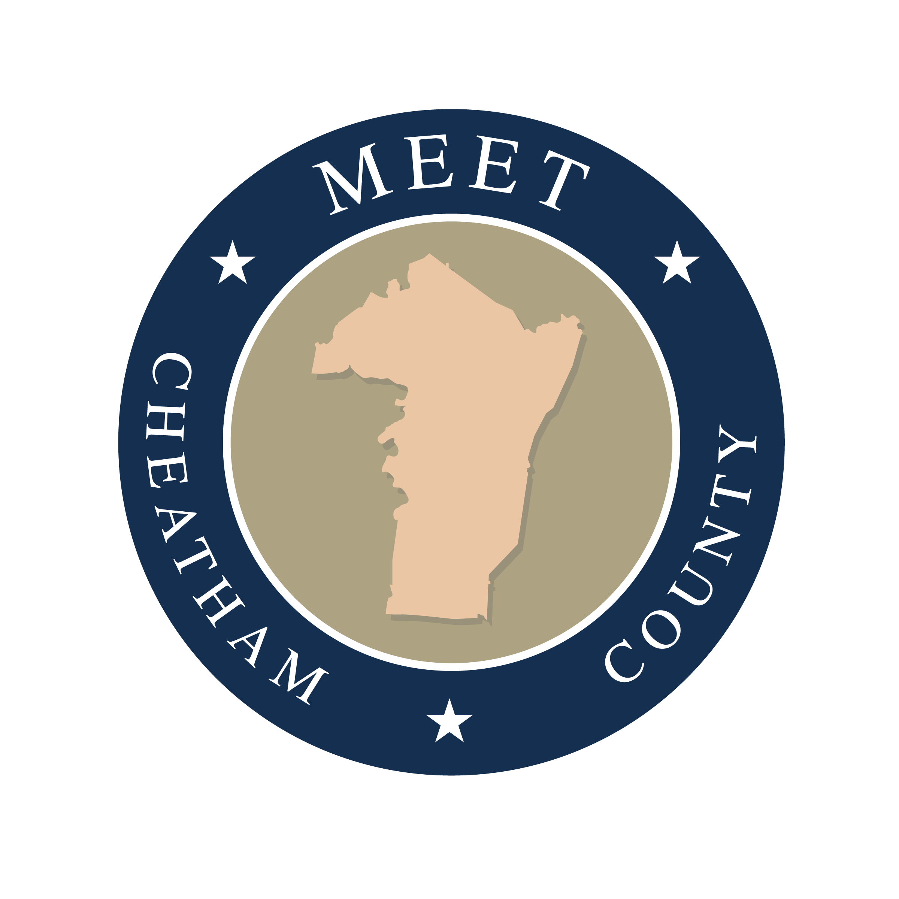

Cheatham County Tourism Initiative



In the Fall of 2024, I collaborated on the development of a tourism initiative for Cheatham County, Tennessee. My team and I identified a county-wide tourism alliance as the most effective strategy to strengthen and unify local tourism efforts. To inform our proposal, we conducted interviews with small business owners and residents, which provided valuable insight into the challenges facing the local tourism industry and guided the refinement of our concept. Our project was selected as the winning proposal by the head of tourism for Cheatham County.
Full Proposal